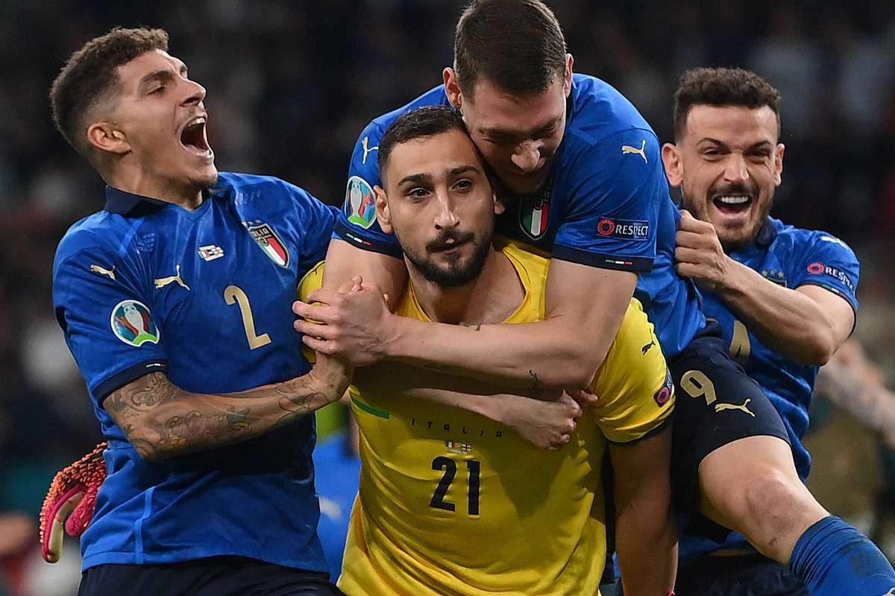

GK Gianluigi Donnarumma
The man that saved Italian football

GK. Gianluigi Donnarumma reaction after he saved the last penalty
Here's the career life of Gianluigi Donnarumma
- 1999 Born in Castellammare di Stabia, Italy
- 2003 Donnarumma grew up in the football academy of ASD Club Napoli in his native Castellammare di Stabia, which he joined in 2003.
If you have time, you can read about this incredible goal keeper on his Wikipedia page